Task 4: Service Insertion with Ansible
Task 4: Terraform — Same Config, Different Tool¶
New to Terraform? The Terraform Primer walks through state, providers, resources, and the plan/apply workflow before you start here.
In Tasks 1-3, you used Ansible to push configuration via CLI over SSH. Now you'll use Terraform to configure the same XRd routers — same outcome, different approach. This gives you a direct comparison of two leading Infrastructure as Code tools on the same problem.
Objective¶
Use Terraform to configure VRF, BGP, and route-policies on both XRd core routers. This is the same configuration that Ansible applied in Task 3's Play 1 (XRd portion only) — but expressed as Terraform resources instead of Ansible tasks.
Before Task 4: - XRd routers have no VRF, BGP VPNv4, or route-policies (Task 3 config has been torn down) - East-west pings fail (no path across the SP core)
After Task 4: - Full east-west connectivity restored: Client1 pings Client3 - Same configuration as Task 3, applied via Terraform + gNMI
Ansible vs Terraform — Key Differences¶
Before you start, understand what makes these tools different:
| Ansible | Terraform | |
|---|---|---|
| Approach | Procedural — tasks run in order | Declarative — describe desired state |
| Protocol | SSH (CLI commands) | gNMI (YANG models) |
| State tracking | None — re-reads device each run | State file tracks what it manages |
| Preview changes | --check mode (limited) |
terraform plan (exact diff) |
| Rollback | Write a separate "undo" playbook | terraform destroy removes everything |
| Drift detection | Re-run and check for changed |
terraform plan shows exact drift |
| Config format | YAML playbook with CLI strings | HCL with typed resource attributes |
Key insight: Ansible pushes CLI commands through SSH — it speaks the same language a human operator would. Terraform speaks gNMI, which maps directly to YANG data models. Neither is "better" — they solve the same problem from different angles.
Step 0: Tear Down the Ansible Config¶
Before Terraform can manage the XRd configuration, we need to remove what Ansible created in Task 3. Run the teardown playbook:
Expected output — 4 tasks, all changed:
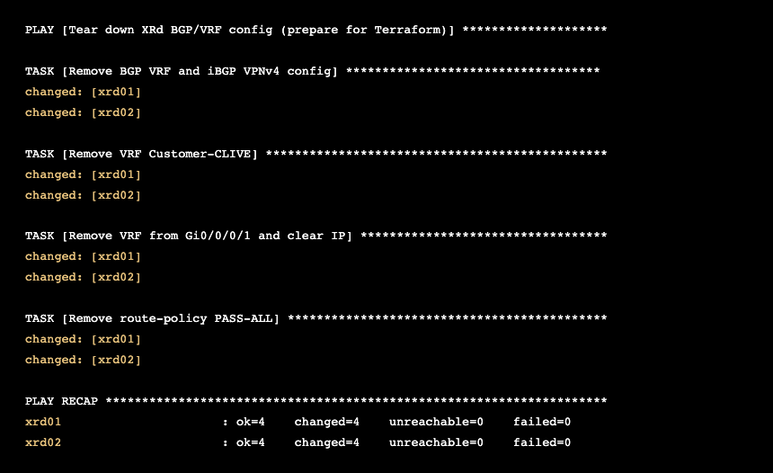
Why tear down first? Terraform tracks what it manages in a state file. If Ansible already created the configuration, Terraform doesn't know about it — it would try to create duplicate resources. Starting clean lets Terraform own the full lifecycle.
Terraform Quick Primer¶
If this is your first time with Terraform, here are the key concepts:
Files you'll work with:
| File | Purpose |
|---|---|
main.tf |
Resource definitions — what to create (already written) |
variables.tf |
Variable declarations with types and descriptions |
terraform.tfvars |
Variable values — this is what you fill in |
The workflow:
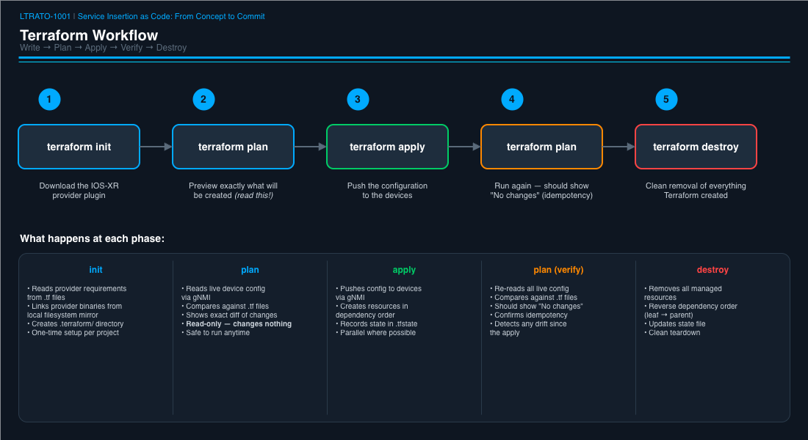
How it connects to the routers:
Terraform uses the CiscoDevNet/iosxr provider, which communicates via gNMI (gRPC Network Management Interface) on port 9339. gNMI speaks YANG models natively — unlike Ansible's CLI-over-SSH approach, there's no screen-scraping or regex parsing. Each Terraform resource maps directly to a YANG model path.
Exercise: Complete the Variables¶
The main.tf file is already written — read through it to understand the
resources, but don't edit it. Your job is to fill in the variable values
in terraform.tfvars.
Open the variables file:
BGP AS Numbers¶
Find the two ___ placeholders for BGP:
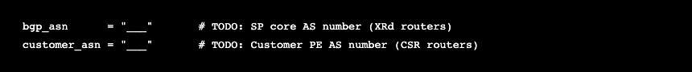
Using Table 3: BGP Peering, fill in:
| Variable | Hint | Where to Find It |
|---|---|---|
bgp_asn |
The AS shared by both XRd routers | Table 3, "Local AS" for xrd01/xrd02 |
customer_asn |
The AS shared by both CSR PEs | Table 3, "Remote AS" for csr-pe01/csr-pe02 |
Per-Router Configuration¶
Scroll down to the xrd_config block — same variables you filled in for
Task 3, same reference tables:
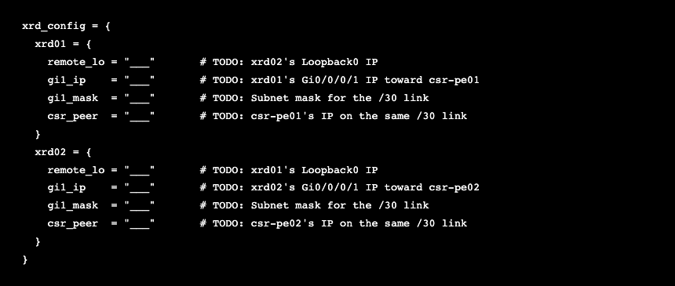
Using Table 2 and Table 3, fill in:
| Variable | Hint | Where to Find It |
|---|---|---|
remote_lo for xrd01 |
xrd02's Loopback0 IP | Table 2, xrd02 Loopback0 row |
remote_lo for xrd02 |
xrd01's Loopback0 IP | Table 2, xrd01 Loopback0 row |
gi1_ip for xrd01 |
xrd01's IP on Gi0/0/0/1 | Table 2, xrd01 Gi0/0/0/1 row |
gi1_ip for xrd02 |
xrd02's IP on Gi0/0/0/1 | Table 2, xrd02 Gi0/0/0/1 row |
gi1_mask (both) |
Subnet mask for /30 | Always 255.255.255.252 for /30 |
csr_peer for xrd01 |
csr-pe01's IP toward xrd01 | Table 2, csr-pe01 Gi2 row |
csr_peer for xrd02 |
csr-pe02's IP toward xrd02 | Table 2, csr-pe02 Gi2 row |
Notice: These are the exact same values you used in Task 3. The data doesn't change — only the tool consuming it.
Read the Code: main.tf Walkthrough¶
Before running Terraform, read through main.tf and notice how it
compares to the Ansible playbook:
| Step | What It Does | Terraform Resource | Ansible Equivalent |
|---|---|---|---|
| 1 | Route-policy PASS-ALL | iosxr_route_policy |
iosxr_config with RPL text |
| 2 | VRF with route-targets | iosxr_vrf |
iosxr_config with CLI lines |
| 3 | Interface VRF + IP | iosxr_interface_ethernet |
iosxr_config with interface parents |
| 4 | BGP process + iBGP neighbor | iosxr_router_bgp |
iosxr_config with router bgp parents |
| 4b | VPNv4 address-family | iosxr_router_bgp_address_family |
Nested in same iosxr_config task |
| 4c | iBGP neighbor AF activation | iosxr_router_bgp_neighbor_address_family |
Nested in same iosxr_config task |
| 5 | BGP VRF + eBGP neighbor | iosxr_router_bgp_vrf |
iosxr_config with vrf parents |
| 5b | VRF address-family | iosxr_router_bgp_vrf_address_family |
Nested in same task |
| 5c | Neighbor route-policies | iosxr_router_bgp_vrf_neighbor_address_family |
Nested in same task |
Key difference: In Ansible, one
iosxr_configtask pushes a block of CLI commands. In Terraform, each configuration element is a separate resource with typed attributes. More verbose, but each piece is independently trackable, plannable, and destroyable.
Run It¶
Step 1: Install the IOS-XR Terraform Provider¶
Terraform needs the CiscoDevNet IOS-XR provider to manage XRd routers via gNMI. This provider isn't in the default Terraform Registry, so we download it manually and place it in the local filesystem mirror.
Run these commands to download and install the provider:
mkdir -p ~/.terraform.d/plugins/registry.terraform.io/ciscodevnet/iosxr/0.7.1/linux_amd64
curl -sL https://github.com/CiscoDevNet/terraform-provider-iosxr/releases/download/v0.7.1/terraform-provider-iosxr_0.7.1_linux_amd64.zip \
-o /tmp/terraform-provider-iosxr.zip
unzip -o /tmp/terraform-provider-iosxr.zip \
-d ~/.terraform.d/plugins/registry.terraform.io/ciscodevnet/iosxr/0.7.1/linux_amd64/
rm /tmp/terraform-provider-iosxr.zip
Verify the binary is in place:
You should see terraform-provider-iosxr_v0.7.1 (about 30 MB).
Why a local mirror? The lab server uses a
.terraformrcfile that tells Terraform to load CiscoDevNet providers from the local filesystem instead of the public registry. This ensures consistent versions and works in environments with restricted internet access. You're placing the binary exactly where.terraformrctells Terraform to look.
Step 2: Initialize Terraform¶
Download the IOS-XR provider plugin:
Expected output:
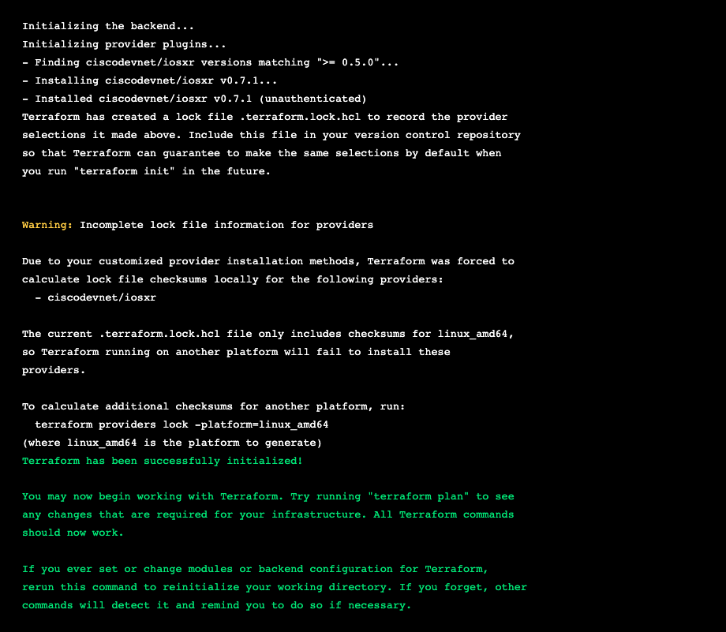
Don't worry about the warnings. The "unauthenticated" and "incomplete lock file" messages are expected — we're using a local filesystem mirror for the provider plugin instead of downloading from the Terraform Registry. This is normal in lab and air-gapped environments.
Step 3: Preview the Changes¶
This is where Terraform shines — you see exactly what will happen before anything touches the routers:
Read the output carefully. Terraform shows every resource it will create, with every attribute value. You should see 18 resources to add across both XRd routers (9 per router).
Full terraform plan output (click to expand)
Terraform used the selected providers to generate the following execution
plan. Resource actions are indicated with the following symbols:
+ create
Terraform will perform the following actions:
# iosxr_interface_ethernet.gi1_xrd01 will be created
+ resource "iosxr_interface_ethernet" "gi1_xrd01" {
+ device = "xrd01"
+ id = (known after apply)
+ ipv4_address = "10.1.0.5"
+ ipv4_netmask = "255.255.255.252"
+ name = "0/0/0/1"
+ shutdown = false
+ type = "GigabitEthernet"
+ vrf = "Customer-CLIVE"
}
# iosxr_interface_ethernet.gi1_xrd02 will be created
+ resource "iosxr_interface_ethernet" "gi1_xrd02" {
+ device = "xrd02"
+ id = (known after apply)
+ ipv4_address = "10.1.0.9"
+ ipv4_netmask = "255.255.255.252"
+ name = "0/0/0/1"
+ shutdown = false
+ type = "GigabitEthernet"
+ vrf = "Customer-CLIVE"
}
# iosxr_route_policy.pass_all_xrd01 will be created
+ resource "iosxr_route_policy" "pass_all_xrd01" {
+ device = "xrd01"
+ id = (known after apply)
+ route_policy_name = "PASS-ALL"
+ rpl = <<-EOT
route-policy PASS-ALL
pass
end-policy
EOT
}
# iosxr_route_policy.pass_all_xrd02 will be created
+ resource "iosxr_route_policy" "pass_all_xrd02" {
+ device = "xrd02"
+ id = (known after apply)
+ route_policy_name = "PASS-ALL"
+ rpl = <<-EOT
route-policy PASS-ALL
pass
end-policy
EOT
}
# iosxr_router_bgp.bgp_xrd01 will be created
+ resource "iosxr_router_bgp" "bgp_xrd01" {
+ as_number = "65000"
+ device = "xrd01"
+ id = (known after apply)
+ neighbors = [
+ {
+ address = "192.168.0.2"
+ remote_as = "65000"
+ update_source = "Loopback0"
},
]
}
# iosxr_router_bgp.bgp_xrd02 will be created
+ resource "iosxr_router_bgp" "bgp_xrd02" {
+ as_number = "65000"
+ device = "xrd02"
+ id = (known after apply)
+ neighbors = [
+ {
+ address = "192.168.0.1"
+ remote_as = "65000"
+ update_source = "Loopback0"
},
]
}
# iosxr_router_bgp_address_family.vpnv4_xrd01 will be created
+ resource "iosxr_router_bgp_address_family" "vpnv4_xrd01" {
+ af_name = "vpnv4-unicast"
+ as_number = "65000"
+ device = "xrd01"
+ id = (known after apply)
}
# iosxr_router_bgp_address_family.vpnv4_xrd02 will be created
+ resource "iosxr_router_bgp_address_family" "vpnv4_xrd02" {
+ af_name = "vpnv4-unicast"
+ as_number = "65000"
+ device = "xrd02"
+ id = (known after apply)
}
# iosxr_router_bgp_neighbor_address_family.vpnv4_nbr_xrd01 will be created
+ resource "iosxr_router_bgp_neighbor_address_family" "vpnv4_nbr_xrd01" {
+ address = "192.168.0.2"
+ af_name = "vpnv4-unicast"
+ as_number = "65000"
+ device = "xrd01"
+ id = (known after apply)
}
# iosxr_router_bgp_neighbor_address_family.vpnv4_nbr_xrd02 will be created
+ resource "iosxr_router_bgp_neighbor_address_family" "vpnv4_nbr_xrd02" {
+ address = "192.168.0.1"
+ af_name = "vpnv4-unicast"
+ as_number = "65000"
+ device = "xrd02"
+ id = (known after apply)
}
# iosxr_router_bgp_vrf.vrf_bgp_xrd01 will be created
+ resource "iosxr_router_bgp_vrf" "vrf_bgp_xrd01" {
+ as_number = "65000"
+ device = "xrd01"
+ id = (known after apply)
+ neighbors = [
+ {
+ address = "10.1.0.6"
+ as_override = "enable"
+ remote_as = "65001"
},
]
+ rd_two_byte_as_index = 1
+ rd_two_byte_as_number = "65000"
+ vrf_name = "Customer-CLIVE"
}
# iosxr_router_bgp_vrf.vrf_bgp_xrd02 will be created
+ resource "iosxr_router_bgp_vrf" "vrf_bgp_xrd02" {
+ as_number = "65000"
+ device = "xrd02"
+ id = (known after apply)
+ neighbors = [
+ {
+ address = "10.1.0.10"
+ as_override = "enable"
+ remote_as = "65001"
},
]
+ rd_two_byte_as_index = 1
+ rd_two_byte_as_number = "65000"
+ vrf_name = "Customer-CLIVE"
}
# iosxr_router_bgp_vrf_address_family.vrf_af_xrd01 will be created
+ resource "iosxr_router_bgp_vrf_address_family" "vrf_af_xrd01" {
+ af_name = "ipv4-unicast"
+ as_number = "65000"
+ device = "xrd01"
+ id = (known after apply)
+ redistribute_connected = true
+ vrf_name = "Customer-CLIVE"
}
# iosxr_router_bgp_vrf_address_family.vrf_af_xrd02 will be created
+ resource "iosxr_router_bgp_vrf_address_family" "vrf_af_xrd02" {
+ af_name = "ipv4-unicast"
+ as_number = "65000"
+ device = "xrd02"
+ id = (known after apply)
+ redistribute_connected = true
+ vrf_name = "Customer-CLIVE"
}
# iosxr_router_bgp_vrf_neighbor_address_family.vrf_nbr_af_xrd01 will be created
+ resource "iosxr_router_bgp_vrf_neighbor_address_family" "vrf_nbr_af_xrd01" {
+ address = "10.1.0.6"
+ af_name = "ipv4-unicast"
+ as_number = "65000"
+ device = "xrd01"
+ id = (known after apply)
+ route_policy_in = "PASS-ALL"
+ route_policy_out = "PASS-ALL"
+ vrf_name = "Customer-CLIVE"
}
# iosxr_router_bgp_vrf_neighbor_address_family.vrf_nbr_af_xrd02 will be created
+ resource "iosxr_router_bgp_vrf_neighbor_address_family" "vrf_nbr_af_xrd02" {
+ address = "10.1.0.10"
+ af_name = "ipv4-unicast"
+ as_number = "65000"
+ device = "xrd02"
+ id = (known after apply)
+ route_policy_in = "PASS-ALL"
+ route_policy_out = "PASS-ALL"
+ vrf_name = "Customer-CLIVE"
}
# iosxr_vrf.customer_clive_xrd01 will be created
+ resource "iosxr_vrf" "customer_clive_xrd01" {
+ device = "xrd01"
+ id = (known after apply)
+ ipv4_unicast = true
+ ipv4_unicast_export_route_target_two_byte_as_format = [
+ {
+ asn2_index = 1
+ stitching = "disable"
+ two_byte_as_number = 65000
},
]
+ ipv4_unicast_import_route_target_two_byte_as_format = [
+ {
+ asn2_index = 1
+ stitching = "disable"
+ two_byte_as_number = 65000
},
]
+ vrf_name = "Customer-CLIVE"
}
# iosxr_vrf.customer_clive_xrd02 will be created
+ resource "iosxr_vrf" "customer_clive_xrd02" {
+ device = "xrd02"
+ id = (known after apply)
+ ipv4_unicast = true
+ ipv4_unicast_export_route_target_two_byte_as_format = [
+ {
+ asn2_index = 1
+ stitching = "disable"
+ two_byte_as_number = 65000
},
]
+ ipv4_unicast_import_route_target_two_byte_as_format = [
+ {
+ asn2_index = 1
+ stitching = "disable"
+ two_byte_as_number = 65000
},
]
+ vrf_name = "Customer-CLIVE"
}
Plan: 18 to add, 0 to change, 0 to destroy.
Take a moment to read through the plan. Notice how each resource maps to something you configured manually in Task 3:
| Plan Resource | What It Creates |
|---|---|
iosxr_route_policy.pass_all_xrd01/02 |
The PASS-ALL route-policy on each router |
iosxr_vrf.customer_clive_xrd01/02 |
VRF Customer-CLIVE with RT import/export 65000:1 |
iosxr_interface_ethernet.gi1_xrd01/02 |
Gi0/0/0/1 with VRF, IP address, and shutdown = false |
iosxr_router_bgp.bgp_xrd01/02 |
BGP AS 65000 with iBGP neighbor (update-source Loopback0) |
iosxr_router_bgp_address_family.vpnv4_xrd01/02 |
VPNv4 unicast address-family |
iosxr_router_bgp_neighbor_address_family.vpnv4_nbr_xrd01/02 |
VPNv4 activation on the iBGP neighbor |
iosxr_router_bgp_vrf.vrf_bgp_xrd01/02 |
BGP VRF with eBGP neighbor (AS 65001, as-override) |
iosxr_router_bgp_vrf_address_family.vrf_af_xrd01/02 |
VRF IPv4 unicast with redistribute connected |
iosxr_router_bgp_vrf_neighbor_address_family.vrf_nbr_af_xrd01/02 |
VRF neighbor route-policies (PASS-ALL in/out) |
Every attribute value in the + lines came from your terraform.tfvars
entries. If any IP address or AS number looks wrong, fix it now in
terraform.tfvars and re-run terraform plan — nothing has touched the
routers yet.
Compare to Ansible: With Ansible,
--checkmode gives you a rough idea of what will change, but it can't show you the exact attribute values. Terraform's plan is precise — it tells you exactly which attributes will be set on which device, before a single byte is sent.
Step 4: Apply the Configuration¶
Push the config to both XRd routers:
Terraform will show the full plan again and ask for confirmation. Type yes:
Watch the resources being created — Terraform automatically determines the
correct order based on depends_on relationships (VRF before interface,
BGP before VRF-BGP):
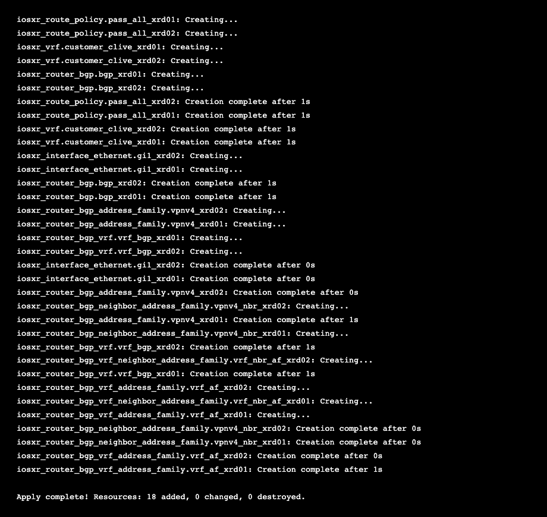
Timing race note: On the first apply, you may see an error on the last 2 resources (
vrf_nbr_af_xrd01/vrf_nbr_af_xrd02) with the message"The address family has not been initialized". This is a gNMI timing issue — the VRF address-family hasn't fully committed on the device before Terraform tries to configure the neighbor under it. This is normal. Simply runterraform applyagain and Terraform will create just the 2 remaining resources:Plan: 2 to add, 0 to change, 0 to destroy. ... Apply complete! Resources: 2 added, 0 changed, 0 destroyed.This is a great teaching moment: Terraform is idempotent and resumable. A partial failure doesn't corrupt anything — you just re-apply and it picks up where it left off.
Speed comparison: Terraform applies all 18 resources in about 3-5 seconds via gNMI. The equivalent Ansible playbook takes longer because it runs tasks sequentially. Terraform can apply resources in parallel across both routers simultaneously, as you can see in the interleaved output above.
Verify: Check for Drift¶
Run the plan again — it should show no changes:
Terraform reads the live configuration from both routers via gNMI, compares
it against the desired state in your .tf files, and reports:
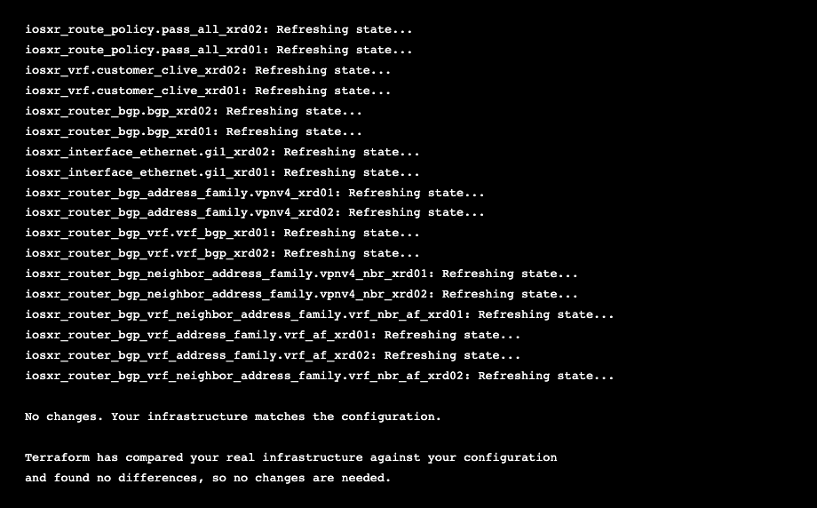
Notice the "Refreshing state..." lines — Terraform is actively reading the live device config via gNMI and comparing every attribute against what it expects. All 18 resources match, so the output is "No changes."
This is Terraform's version of idempotency. The state file records what
was last known, plan refreshes it from the live device, then diffs against
your .tf configuration. If someone manually changed something on the router,
this command would show you exactly what drifted (you'll see this in Task 4b).
Verify: East-West Connectivity¶
Test that the configuration works — same ping test as Task 3:
Note: After
terraform apply, BGP needs about 30-60 seconds to converge — the iBGP VPNv4 session must establish and exchange VPN labels before end-to-end traffic flows. If you get 100% packet loss, wait a minute and try again.
Expected output — 100% success:
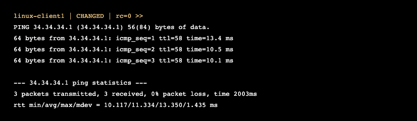
Full east-west connectivity — rebuilt entirely with Terraform. The traffic path is identical to Task 3: client1 (23.23.23.1) → n9k-ce01 → csr-pe01 → xrd01 → xrd02 → csr-pe02 → n9k-ce02 → client3 (34.34.34.1), crossing 6 devices, 4 platforms, and 4 technologies (VLAN, IS-IS, MPLS, BGP VPNv4).
Bonus: Clean Destroy¶
One of Terraform's strongest features is clean teardown. Try it:
Type yes when prompted. Terraform removes all 18 resources in reverse
dependency order — leaf resources first, then their parents:
Full terraform destroy output (click to expand)
Terraform will perform the following actions:
# iosxr_interface_ethernet.gi1_xrd01 will be destroyed
- resource "iosxr_interface_ethernet" "gi1_xrd01" {
- device = "xrd01" -> null
- ipv4_address = "10.1.0.5" -> null
- ipv4_netmask = "255.255.255.252" -> null
- name = "0/0/0/1" -> null
- shutdown = false -> null
- type = "GigabitEthernet" -> null
- vrf = "Customer-CLIVE" -> null
}
# iosxr_interface_ethernet.gi1_xrd02 will be destroyed
- resource "iosxr_interface_ethernet" "gi1_xrd02" {
- device = "xrd02" -> null
- ipv4_address = "10.1.0.9" -> null
- ipv4_netmask = "255.255.255.252" -> null
- name = "0/0/0/1" -> null
- shutdown = false -> null
- type = "GigabitEthernet" -> null
- vrf = "Customer-CLIVE" -> null
}
... (all 18 resources shown with - destroy markers)
Plan: 0 to add, 0 to change, 18 to destroy.
iosxr_router_bgp_neighbor_address_family.vpnv4_nbr_xrd01: Destroying...
iosxr_router_bgp_neighbor_address_family.vpnv4_nbr_xrd02: Destroying...
iosxr_router_bgp_vrf_address_family.vrf_af_xrd01: Destroying...
iosxr_router_bgp_vrf_address_family.vrf_af_xrd02: Destroying...
iosxr_router_bgp_vrf_neighbor_address_family.vrf_nbr_af_xrd02: Destroying...
iosxr_router_bgp_vrf_neighbor_address_family.vrf_nbr_af_xrd01: Destroying...
iosxr_interface_ethernet.gi1_xrd02: Destroying...
iosxr_interface_ethernet.gi1_xrd01: Destroying...
iosxr_router_bgp_neighbor_address_family.vpnv4_nbr_xrd02: Destruction complete after 0s
iosxr_router_bgp_address_family.vpnv4_xrd02: Destroying...
iosxr_router_bgp_vrf_neighbor_address_family.vrf_nbr_af_xrd01: Destruction complete after 1s
iosxr_route_policy.pass_all_xrd01: Destroying...
iosxr_router_bgp_vrf_neighbor_address_family.vrf_nbr_af_xrd02: Destruction complete after 1s
iosxr_route_policy.pass_all_xrd02: Destroying...
iosxr_router_bgp_vrf_address_family.vrf_af_xrd01: Destruction complete after 1s
iosxr_router_bgp_vrf.vrf_bgp_xrd01: Destroying...
iosxr_router_bgp_vrf_address_family.vrf_af_xrd02: Destruction complete after 1s
iosxr_router_bgp_vrf.vrf_bgp_xrd02: Destroying...
iosxr_router_bgp_neighbor_address_family.vpnv4_nbr_xrd01: Destruction complete after 1s
iosxr_router_bgp_address_family.vpnv4_xrd01: Destroying...
iosxr_interface_ethernet.gi1_xrd02: Destruction complete after 1s
iosxr_interface_ethernet.gi1_xrd01: Destruction complete after 1s
iosxr_route_policy.pass_all_xrd02: Destruction complete after 1s
iosxr_route_policy.pass_all_xrd01: Destruction complete after 0s
iosxr_router_bgp_vrf.vrf_bgp_xrd01: Destruction complete after 1s
iosxr_vrf.customer_clive_xrd01: Destroying...
iosxr_router_bgp_vrf.vrf_bgp_xrd02: Destruction complete after 1s
iosxr_vrf.customer_clive_xrd02: Destroying...
iosxr_router_bgp_address_family.vpnv4_xrd01: Destruction complete after 1s
iosxr_router_bgp.bgp_xrd01: Destroying...
iosxr_router_bgp_address_family.vpnv4_xrd02: Destruction complete after 0s
iosxr_router_bgp.bgp_xrd02: Destroying...
iosxr_vrf.customer_clive_xrd02: Destruction complete after 0s
iosxr_vrf.customer_clive_xrd01: Destruction complete after 0s
iosxr_router_bgp.bgp_xrd01: Destruction complete after 0s
iosxr_router_bgp.bgp_xrd02: Destruction complete after 1s
Destroy complete! Resources: 18 destroyed.
Timing race note: Similar to apply, you may see a gNMI error during destroy (e.g.,
"The address family cannot be disabled; there are still neighbors/groups which have configuration for it"). This is the same race condition — just runterraform destroyagain and the remaining 1-2 resources will be cleaned up.
Verify the config is gone — pings should fail:
Expected output — 100% loss:
The VRF, BGP, and route-policies have been cleanly removed from both XRd routers. The data plane is down because the SP core no longer carries the customer VPN routes.
Now re-apply the config before moving to Task 4b:
(If you see the timing error, run terraform apply -auto-approve once more.)
Wait about 90 seconds for BGP to converge, then confirm east-west pings are working again before proceeding.
Compare to Ansible: To undo Ansible's work, you'd need to write a separate teardown playbook (like we did in Step 0). Terraform tracks what it created and can remove exactly those resources — nothing more, nothing less. And re-creating everything is just
terraform applyaway.
Checkpoint¶
- [ ] IOS-XR provider binary installed in local mirror
- [ ]
terraform initloaded the IOS-XR provider - [ ]
terraform planshowed 18 resources to add - [ ]
terraform applycreated all 18 resources successfully - [ ]
terraform plan(second run) showed "No changes" - [ ] East-west ping from client1 to client3 succeeded
- [ ] (Bonus)
terraform destroycleanly removed all config
Automation Insight: You just configured the same network with two different tools. In practice, teams often use both: Terraform for provisioning (spinning up infrastructure from scratch) and Ansible for day-2 operations (ongoing config changes, compliance checks, OS upgrades). Understanding both gives you the flexibility to choose the right tool for each job.
Task 4b: Terraform Drift Detection & Remediation¶
In Task 1b, you saw how Ansible handles configuration drift — you broke
something, re-ran the playbook, and Ansible fixed it. The output showed
changed on the affected tasks, but you had to infer what changed.
Terraform takes drift detection further. When someone manually changes a
router's configuration, terraform plan shows you the exact diff —
which attribute changed, what the current value is, and what Terraform will
set it back to. No guessing, no re-reading show commands.
Objective¶
Manually break the XRd configuration, use terraform plan to detect the
exact drift, and terraform apply to remediate it.
Before drift:
- East-west pings working (client1 → client3)
- terraform plan shows "No changes"
After remediation:
- East-west pings restored
- terraform plan shows "No changes" again
Step 1: Break Something¶
Important: If you ran
terraform destroyin the bonus step above, first re-apply the config:terraform apply -auto-approve
Manually shut down the PE-facing interface on xrd01. Use the ContainerLab VS Code extension to open a terminal to xrd01, then run:
Alternative — SSH from the jump host terminal:
Then run the same IOS-XR commands above. Typeexitwhen done.
This simulates a common real-world scenario — someone logs into a router and makes an out-of-band change that breaks connectivity.
Step 2: Confirm the Damage¶
Verify that east-west connectivity is broken:
Expected output — 100% packet loss:
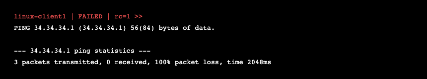
The interface is down, so the eBGP VRF session to csr-pe01 drops, VPN routes are withdrawn, and client1 has no path to reach client3's network.
Step 3: Detect the Drift¶
This is where Terraform shines. Run:
Terraform reads the live device configuration via gNMI, compares it against
the desired state in your .tf files, and shows you exactly what drifted:
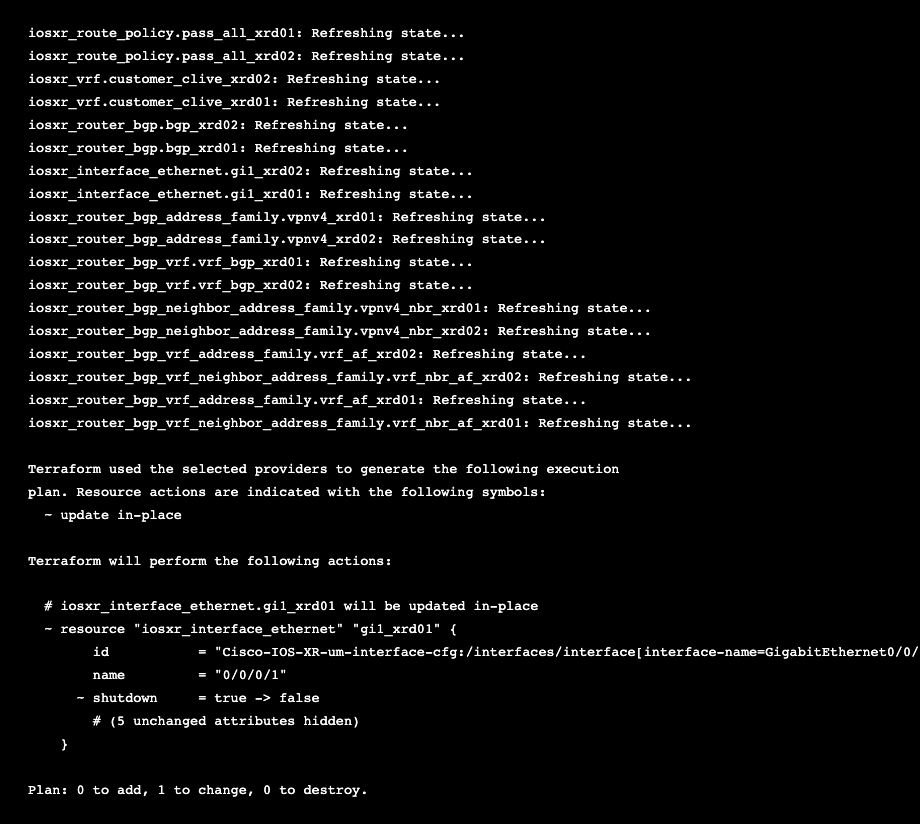
Read this output carefully — it's packed with information:
- "Refreshing state..." — Terraform read all 18 resources from the live devices via gNMI. It checked every VRF, every interface, every BGP config.
- Only 1 resource drifted —
iosxr_interface_ethernet.gi1_xrd01on devicexrd01 - The exact change —
shutdown = true -> false— the interface is currently shut (true) and Terraform will set it tofalse(no shutdown) - Everything else matched — 17 other resources show no drift
- "0 to add, 1 to change, 0 to destroy" — surgical precision
Compare to Ansible: When you re-ran the Task 1 playbook after breaking a port, Ansible showed
changed: [n9k-ce01]— you knew something changed, but had to read the task name to figure out what. Terraform's plan tells you the exact attribute (shutdown = true → false), the exact resource (gi1_xrd01), and the exact device (xrd01). This precision matters when you're managing hundreds of resources across dozens of devices.And critically:
terraform plandidn't change anything. It's a read-only operation. You can run it as many times as you want — against production, against lab, against anything — without risk. Ansible's equivalent (--check) can sometimes trigger side effects on certain modules.
Step 4: Let Terraform Fix It¶
Apply the remediation:
Expected output — watch Terraform refresh all 18 resources, find the one that drifted, and fix only that:
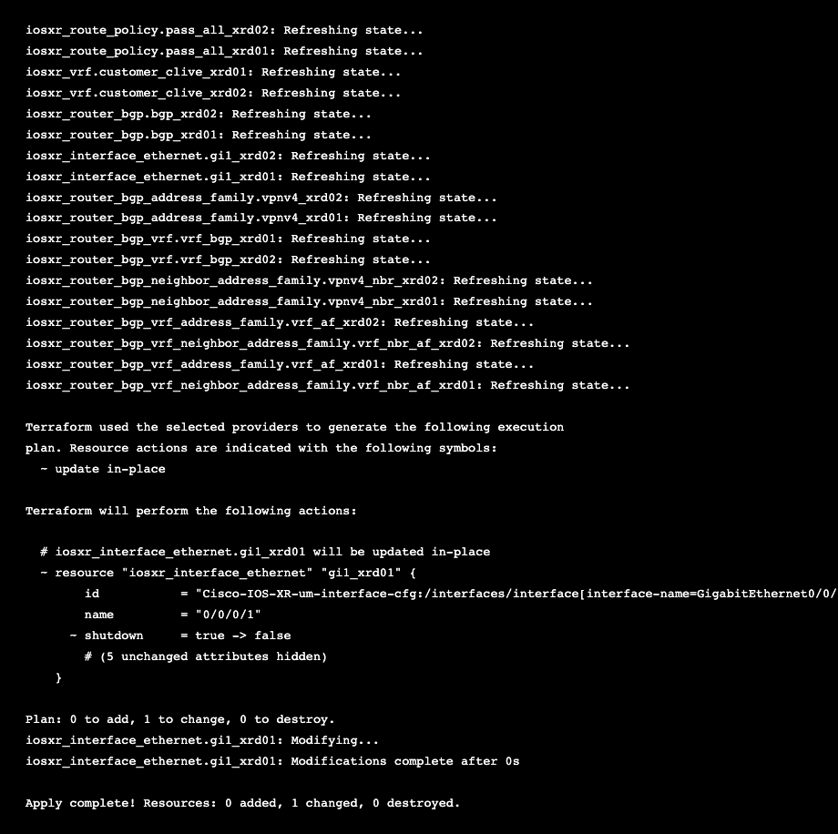
Notice: 0 added, 1 changed, 0 destroyed. Terraform only touched the
one resource that drifted — gi1_xrd01 on xrd01. The other 17 resources
across both routers were left completely alone. It didn't re-push the VRF,
didn't re-create the BGP config, didn't touch xrd02 at all.
Step 5: Verify the Fix¶
Confirm connectivity is restored:
Note: Wait about 30-60 seconds after the apply for BGP to reconverge. The eBGP VRF session needs to re-establish and exchange routes before end-to-end traffic flows.
Expected output — 100% success:

Now confirm Terraform sees no remaining drift:
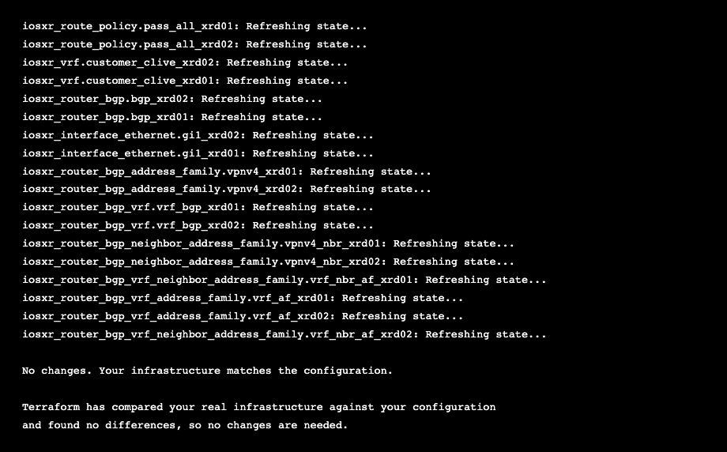
All 18 resources refreshed, all 18 match. The drift has been fully remediated. The full cycle is complete:
- Detect —
terraform planfound the exact drift - Fix —
terraform applycorrected only what changed - Verify —
terraform planconfirms everything is back in sync
Drift Detection: Ansible vs Terraform¶
| Ansible (Task 1b) | Terraform (Task 4b) | |
|---|---|---|
| Detect drift | Re-run playbook, look for changed |
terraform plan shows exact diff |
| What you learn | "Something changed on this device" | "shutdown changed from false to true on gi1_xrd01" |
| Remediate | Re-run the same playbook | terraform apply |
| Scope of fix | Re-pushes all config (idempotent but broad) | Only changes what drifted |
| Without running? | Must execute to detect | plan is read-only — safe to run anytime |
Key insight: Terraform's state file is a double-edged sword. It enables precise drift detection, but it also means Terraform only knows about resources it created. If someone adds a new interface or route outside of Terraform, it won't detect that. Ansible, with no state file, re-evaluates the full config every time — different trade-off.
Checkpoint¶
- [ ] Manually shut down Gi0/0/0/1 on xrd01
- [ ] Confirmed east-west pings broke
- [ ]
terraform planshowed the exact drift (shutdown = true → false) - [ ]
terraform applyfixed only the drifted resource - [ ] East-west pings restored
- [ ]
terraform planconfirmed "No changes"
Automation Insight: In production, teams run
terraform planon a schedule (via CI/CD) against live infrastructure. If the plan shows any changes, it triggers an alert — someone made an out-of-band change. The team can then decide whether to remediate (apply the plan) or update the code to match the new reality. Either way, drift is visible, not hidden.